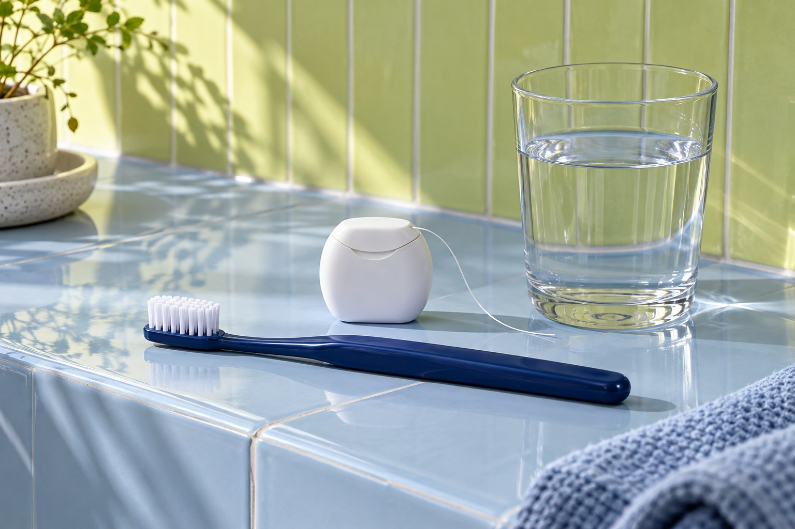

Prevenção e rotina
Acompanhamento para os cuidados do dia a dia.

Avaliação da saúde bucal, conversa sobre hábitos e organização dos retornos. Conheça como a prevenção pode fazer parte do seu acompanhamento.
O que faz parte desse cuidado?
O acompanhamento começa pela avaliação da saúde bucal e pela conversa sobre a rotina. Os cuidados são definidos a partir do que for observado no encontro, sem um pacote igual para todas as pessoas.
O que conversar na consulta?
Leve suas dúvidas sobre higiene, sensibilidade ou mudanças que percebeu. Pergunte quais cuidados são indicados, por quê e como eles se relacionam com sua rotina.
Como organizar os retornos?
Frequência de retorno e procedimentos dependem da avaliação. Antes de sair, esclareça o próximo passo, as orientações recebidas e como entrar em contato com a equipe.